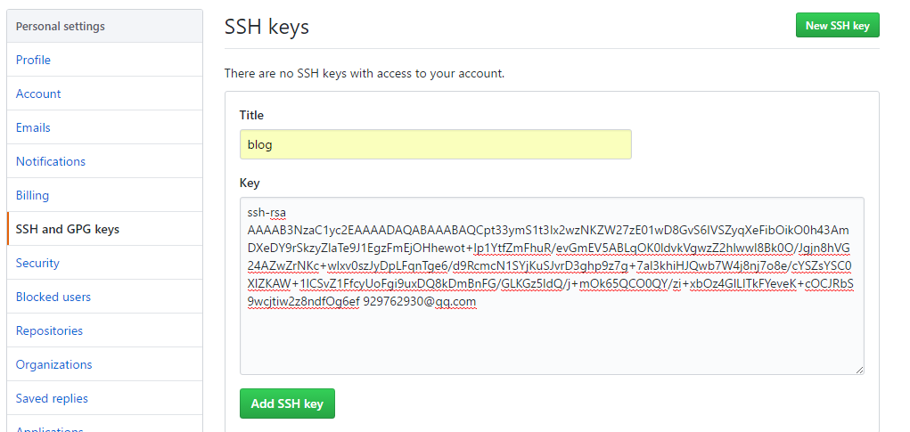

Hexo是一款基于Node.js的静态博客框架，可以deploy到Github上。
优点：
准备工作
安装Node.js
下载相应系统的Node.js
本文选的是windows版本，安装，一路next。
设置环境变量

验证是否安装成功

安装git
没有什么技术含量，传送门
使用npm安装Hexo
npm其实是Node.js的包管理工具
npm已经在Node.js安装的时候顺带装好了
通过命令行查看npm -v
安装Hexo
npm install -g hexo-cli
输入hexo -v，检查hexo是否安装成功
新建一个文件夹 blog 用来存放博客
cd到blog目录，或者在该目录右键打开git命令行窗口
输入hexo init，初始化该文件夹（需要点时间）
输入npm install，安装所需要的组件
启动hexo
输入hexo g，生成hexo静态页面
输入hexo s，开启服务器，访问该网址，正式体验Hexo
如果你能看到hexo默认的hello world网页，恭喜你第一步成功了。
部署到github
如果你要将博客部署到github上，请完成下面的过程：
创建github pages
github官网注册帐号
新建库，名字为 ： xxx.github.io
注意：xxx为你的用户名


配置SSH
生成SSH Key
ssh-keygen -t rsa -C "youremail@example" #将邮箱换成自己的
一路回车之后就生成了自己的SSH Key。
默认保存在用户主目录的.ssh目录下。
.ssh目录下有 id_rsa 和id_rsa.pub 两个文件。
这两个就是SSH Key的秘钥对。id_rsa 是私钥，id_rsa.pub 是公钥。
登录Github，点击头像下的settings，添加ssh

找到之前生成的SSH Key 的公钥 id_rsa.pub
打开id_rsa.pub，将里面的内容添加到key，
title输一个自己喜欢的即可。

输入ssh -T git@github.com，测试添加ssh是否成功
配置Deployment
在biog根目录下，打开_config.yml文件，修改repo值（在末尾）
1
2
3
4deploy:
type: git
repo: git@github.com:chenthreetrees/chenthreetrees.github.io.git
branch: master
repo值是你在github项目里的ssh（右下角）
部署
在生成以及部署文章之前，需要安装一个扩展
npm install hexo-deployer-git --save
生成静态页面hexo g
部署hexo d
部署成功后访问你的地址：http://用户名.github.io
绑定域名
设置阿里云CNAME映射

在biog根目录下，找到public目录，即生成的静态页面文件目录，
在该目录下创建一个名为CNAME的文件，注意不需要后缀
重新部署，就可以用你的域名来访问了
配置博客
全站配置
注意：文件中配置项的冒号后面必须加空格，否则报错
相应的修改博客根目录下的_config.yml文件，如下：
1
2
3
4
5
6
7
8
9
10
11
12
13
14
15
16
17
18
19
20
21
22
23
24
25
26
27
28
29
30
31
32
33
34
35
36
37
38
39
40
41
42
43
44
45
46
47
48
49
50
51
52
53
54
55
56
57
58
59
60
61
62
63
64
65
66
67
68
69
70
71
72
73
74
75
76
77
78
79
80
81
82
83
84
85# Hexo Configuration
## Docs: https://hexo.io/docs/configuration.html
## Source: https://github.com/hexojs/hexo/
# Site
title: 三木 #站点名
subtitle: 自从当年我背井离乡，乡里人就没喝过一口水
description:
author: threetree #作者
timezone:
since: 2017 # 博客建立年份，Next主题增加的字段
avatar: /images/avatar.jpg # 头像。Next主题增加的字段
language: zh-Hans # 语言。Next主题增加的字段
# URL
## If your site is put in a subdirectory, set url as 'http://yoursite.com/child' and root as '/child/'
url: http://chenthreetrees.github.io/
root: /
permalink: :year/:month/:day/:title/
permalink_defaults:
# Directory
source_dir: source #源文件夹，这个文件夹用来存放内容。
public_dir: public #公共文件夹，这个文件夹用于存放生成的站点文件。
tag_dir: tags #标签文件夹
archive_dir: archives #归档文件夹
category_dir: categories #分类文件夹
code_dir: downloads/code #nclude code 文件夹
i18n_dir: :lang #国际化（i18n）文件夹
#跳过指定文件的渲染，您可使用 glob 表达式来匹配路径。
skip_render:
# Writing
new_post_name: :title.md # 新建文章默认文件名
default_layout: post # 默认布局
titlecase: false # Transform title into titlecase
external_link: true # 在新标签中打开一个外部链接，默认为true
filename_case: 0 #转换文件名，1代表小写；2代表大写；默认为0，意思就是创建文章的时候，是否自动帮你转换文件名，默认就行，意义不大。
render_drafts: false #是否渲染_drafts目录下的文章，默认为false
post_asset_folder: true #启动 Asset 文件夹
relative_link: false #把链接改为与根目录的相对位址，默认false
future: true #显示未来的文章，默认false
highlight: #代码块的设置
enable: true
line_number: true
auto_detect: false
tab_replace:
# Home page setting
# path: Root path for your blogs index page. (default = '')
# per_page: Posts displayed per page. (0 = disable pagination)
# order_by: Posts order. (Order by date descending by default)
index_generator:
path: ''
per_page: 10
order_by: -date
# Category & Tag
default_category: uncategorized
category_map:
tag_map:
# Date / Time format
## Hexo uses Moment.js to parse and display date
## You can customize the date format as defined in
## http://momentjs.com/docs/#/displaying/format/
date_format: YYYY-MM-DD
time_format: HH:mm:ss
# Pagination
## Set per_page to 0 to disable pagination
per_page: 10
pagination_dir: page
# Extensions
## Plugins: https://hexo.io/plugins/
## Themes: https://hexo.io/themes/
theme: next
# Deployment
## Docs: https://hexo.io/docs/deployment.html
deploy:
type: git
repo: git@github.com:chenthreetrees/chenthreetrees.github.io.git
branch: master
更换主题
上面看到的默认主题，可能不是我们喜欢的，
github上有大量的Hexo主题可供选择，这里选择使用next主题
安装：在博客根目录下执行
git clone https://github.com/iissnan/hexo-theme-next.git themes/next
启用：修改博客根目录下的_config.yml配置文件中的theme属性，将其设置为next
修改主题配置：\themes\next_config.yml
我的主题_config.yml文件：1
2
3
4
5
6
7
8
9
10
11
12
13
14
15
16
17
18
19
20
21
22
23
24
25
26
27
28
29
30
31
32
33
34
35
36
37
38
39
40
41
42
43
44
45
46
47
48
49
50
51
52
53
54
55
56
57
58
59
60
61
62
63
64
65
66
67
68
69
70
71
72
73
74
75
76
77
78
79
80
81
82
83
84
85
86
87
88
89
90
91
92
93
94
95
96
97
98
99
100
101
102
103
104
105
106
107
108
109
110
111
112
113
114
115
116
117
118
119
120
121
122
123
124
125
126
127
128
129
130
131
132
133
134
135
136
137
138
139
140
141
142
143
144
145
146
147
148
149
150
151
152
153
154
155
156
157
158
159
160
161
162
163
164
165
166
167
168
169
170
171
172
173
174
175
176
177
178
179
180
181
182
183
184
185
186
187
188
189
190
191
192
193
194
195
196
197
198
199
200
201
202
203
204
205
206
207
208
209
210
211
212
213
214
215
216
217
218
219
220
221
222
223
224
225
226
227
228
229
230
231
232
233
234
235
236
237
238
239
240
241
242
243
244
245
246
247
248
249
250
251
252
253
254
255
256
257
258
259
260
261
262
263
264
265
266
267
268
269
270
271
272
273
274
275
276
277
278
279
280
281
282
283
284
285
286
287
288
289
290
291
292
293
294
295
296
297
298
299
300
301
302
303
304
305
306
307
308
309
310
311
312
313
314
315
316
317
318
319
320
321
322
323
324
325
326
327
328
329
330
331
332
333
334
335
336
337
338
339
340
341
342
343
344
345
346
347
348
349
350
351
352
353
354
355
356
357
358
359
360
361
362
363
364
365
366
367
368
369
370
371
372
373
374
375
376
377
378
379
380
381
382
383
384
385
386
387
388
389
390
391
392
393
394
395
396
397
398
399
400
401
402
403
404
405
406
407
408
409
410
411
412
413
414
415
416
417
418
419
420
421
422
423
424
425
426
427
428
429
430
431
432
433
434
435
436
437
438
439
440
441
442
443
444
445
446
447
448
449
450
451
452
453
454
455
456
457
458
459
460
461
462
463
464
465
466
467
468
469
470
471
472
473
474
475
476
477
478
479
480
481
482
483
484
485
486
487
488
489
490
491
492
493
494
495
496
497
498
499
500
501
502
503
504
505
506
507
508
509
510
511
512
513
514
515
516
517
518
519
520
521
522
523
524
525
526
527
528
529
530
531
532
533
534
535
536
537
538
539
540
541
542
543
544
545
546
547
548
549
550
551
552
553
554
555
556
557
558
559
560
561
562
563
564
565
566
567
568
569
570
571
572
573
574
575
576
577
578
579
580
581
582
583
584
585
586
587
588
589
590
591
592
593
594
595
596
597
598
599
600
601
602
603
604
605
606
607
608
609
610
611
612
613
614
615
616
617
618
619
620
621
622
623
624
625
626
627
628
629
630
631
632
633
634
635
636
637
638
639
640
641
642
643
644
645
646
647
648
649
650
651
652
653
654
655
656
657
658
659
660
661
662
663
664
665
666
667
668
669
670
671
672
673
674
675
676
677
678
679
680
681
682
683
684
685
686
687
688
689
690
691
692
693
694
695
696
697
698
699
700
701
702
703
704
705
706
707
708
709
710
711
712
713
714
715
716
717
718
719
720
721
722
723
724
725
726
727
728
729
730
731
732
733
734
735
736
737
738
739
740
741
742
743
744
745
746
747
748
749
750
751
752
753
754
755
756
757
758
759
760
761
762
763
764
765
766
767
768
769
770
771
772
773
774
775
776
777
778
779
780
781
782
783
784
785
786
787
788
789
790
791
792
793
794
795
796
797
798
799
800
801
802
803
804
805
806
807
808
809
810
811
812
813
814
815
816
817
818
819
820
821
822
823
824
825
826
827
828# ===============================================================
# ========================= ATTENTION! ==========================
# ===============================================================
# NexT repository is moving here: https://github.com/theme-next
# ===============================================================
# It's rebase to v6.0.0 and future maintenance will resume there
# ===============================================================
# ---------------------------------------------------------------
# Theme Core Configuration Settings
# ---------------------------------------------------------------
# Set to true, if you want to fully override the default configuration.
# Useful if you don't want to inherit the theme _config.yml configurations.
override: true
# ---------------------------------------------------------------
# Site Information Settings
# ---------------------------------------------------------------
# To get or check favicons visit: https://realfavicongenerator.net
# Put your favicons into `hexo-site/source/` (recommend) or `hexo-site/themes/next/source/images/` directory.
# Default NexT favicons placed in `hexo-site/themes/next/source/images/` directory.
# And if you want to place your icons in `hexo-site/source/` root directory, you must remove `/images` prefix from pathes.
# For example, you put your favicons into `hexo-site/source/images` directory.
# Then need to rename & redefine they on any other names, otherwise icons from Next will rewrite your custom icons in Hexo.
favicon:
small: /images/favicon-16x16-next.png
medium: /images/favicon-32x32-next.png
apple_touch_icon: /images/apple-touch-icon-next.png
safari_pinned_tab: /images/logo.svg
#android_manifest: /images/manifest.json
#ms_browserconfig: /images/browserconfig.xml
# Set default keywords (Use a comma to separate)
keywords: "threetrees, android, 三木"
# Set rss to false to disable feed link.
# Leave rss as empty to use site's feed link.
# Set rss to specific value if you have burned your feed already.
rss:
footer:
# Specify the date when the site was setup.
# If not defined, current year will be used.
#since: 2015
# Icon between year and copyright info.
icon: user
# If not defined, will be used `author` from Hexo main config.
copyright:
# -------------------------------------------------------------
# Hexo link (Powered by Hexo).
powered: true
theme:
# Theme & scheme info link (Theme - NexT.scheme).
enable: true
# Version info of NexT after scheme info (vX.X.X).
version: true
# -------------------------------------------------------------
# Any custom text can be defined here.
#custom_text: Hosted by <a target="_blank" href="https://pages.github.com">GitHub Pages</a>
# ---------------------------------------------------------------
# SEO Settings
# ---------------------------------------------------------------
# Canonical, set a canonical link tag in your hexo, you could use it for your SEO of blog.
# See: https://support.google.com/webmasters/answer/139066
# Tips: Before you open this tag, remember set up your URL in hexo _config.yml ( ex. url: http://yourdomain.com )
canonical: true
# Change headers hierarchy on site-subtitle (will be main site description) and on all post/pages titles for better SEO-optimization.
seo: false
# If true, will add site-subtitle to index page, added in main hexo config.
# subtitle: Subtitle
index_with_subtitle: false
# ---------------------------------------------------------------
# Menu Settings
# ---------------------------------------------------------------
# When running the site in a subdirectory (e.g. domain.tld/blog), remove the leading slash from link value (/archives -> archives).
# Usage: `Key: /link/ || icon`
# Key is the name of menu item. If translate for this menu will find in languages - this translate will be loaded; if not - Key name will be used. Key is case-senstive.
# Value before `||` delimeter is the target link.
# Value after `||` delimeter is the name of FontAwesome icon. If icon (with or without delimeter) is not specified, question icon will be loaded.
menu:
home: / || home
categories: /categories/ || th
archives: /archives/ || archive
#tags: /tags/ || tags
android: /android/ || android
about: /about/ || user
#schedule: /schedule/ || calendar
#sitemap: /sitemap.xml || sitemap
#commonweal: /404/ || heartbeat
# Enable/Disable menu icons.
menu_icons:
enable: true
# Icon Mapping.
home: home
about: user
categories: th
tags: tags
archives: archive
commonweal: heartbeat
android: android
# ---------------------------------------------------------------
# Scheme Settings
# ---------------------------------------------------------------
# Schemes
#scheme: Muse
#scheme: Mist
scheme: Pisces
#scheme: Gemini
# ---------------------------------------------------------------
# Sidebar Settings
# ---------------------------------------------------------------
# Social Links.
# Usage: `Key: permalink || icon`
# Key is the link label showing to end users.
# Value before `||` delimeter is the target permalink.
# Value after `||` delimeter is the name of FontAwesome icon. If icon (with or without delimeter) is not specified, globe icon will be loaded.
#social:
#GitHub: https://github.com/yourname || github
#E-Mail: mailto:yourname@gmail.com || envelope
#Google: https://plus.google.com/yourname || google
#Twitter: https://twitter.com/yourname || twitter
#FB Page: https://www.facebook.com/yourname || facebook
#VK Group: https://vk.com/yourname || vk
#StackOverflow: https://stackoverflow.com/yourname || stack-overflow
#YouTube: https://youtube.com/yourname || youtube
#Instagram: https://instagram.com/yourname || instagram
#Skype: skype:yourname?call|chat || skype
social_icons:
enable: true
icons_only: false
transition: false
# Blog rolls
links_icon: link
links_title: Links
links_layout: block
#links_layout: inline
#links:
#Title: http://example.com/
# Sidebar Avatar
# in theme directory(source/images): /images/avatar.gif
# in site directory(source/uploads): /uploads/avatar.gif
avatar: /images/avatar.gif
#文章自动显示目录
toc:
enable: true
# Automatically add list number to toc.#目录是否自动显示数字序号
number: true
# If true, all words will placed on next lines if header width longer then sidebar width.
wrap: false
# Creative Commons 4.0 International License.
# http://creativecommons.org/
# Available: by | by-nc | by-nc-nd | by-nc-sa | by-nd | by-sa | zero
#creative_commons: by-nc-sa
#creative_commons:
sidebar:
# Sidebar Position, available value: left | right (only for Pisces | Gemini).
position: left
#position: right
# Sidebar Display, available value (only for Muse | Mist):
# - post expand on posts automatically. Default.
# - always expand for all pages automatically
# - hide expand only when click on the sidebar toggle icon.
# - remove Totally remove sidebar including sidebar toggle.
display: post
#display: always
#display: hide
#display: remove
# Sidebar offset from top menubar in pixels (only for Pisces | Gemini).
offset: 12
# Back to top in sidebar (only for Pisces | Gemini).
b2t: false
# Scroll percent label in b2t button.
scrollpercent: false
# Enable sidebar on narrow view (only for Muse | Mist).
onmobile: false
# ---------------------------------------------------------------
# Post Settings
# ---------------------------------------------------------------
# Automatically saving scroll position on each post/page in cookies.
save_scroll: false
# Automatically excerpt description in homepage as preamble text.
excerpt_description: true
# Automatically Excerpt. Not recommend.
# Please use <!-- more --> in the post to control excerpt accurately.
auto_excerpt:
enable: true
length: 150
# Use Lato font
use_font_lato: true
# Post meta display settings
post_meta:
item_text: true
created_at: true
updated_at: false
categories: true
# Post wordcount display settings
# Dependencies: https://github.com/willin/hexo-wordcount
post_wordcount:
item_text: true
wordcount: false
min2read: false
totalcount: false
separated_meta: true
# Wechat Subscriber
#wechat_subscriber:
#enabled: true
#qcode: /path/to/your/wechatqcode ex. /uploads/wechat-qcode.jpg
#description: ex. subscribe to my blog by scanning my public wechat account
# Reward
#reward_comment: Donate comment here
#wechatpay: /images/wechatpay.jpg
#alipay: /images/alipay.jpg
#bitcoin: /images/bitcoin.png
# Declare license on posts
post_copyright:
enable: false
license: CC BY-NC-SA 3.0
license_url: https://creativecommons.org/licenses/by-nc-sa/3.0/
# ---------------------------------------------------------------
# Misc Theme Settings
# ---------------------------------------------------------------
# Reduce padding / margin indents on devices with narrow width.
mobile_layout_economy: false
# Android Chrome header panel color ($black-deep).
android_chrome_color: "#222"
# Custom Logo.
# !!Only available for Default Scheme currently.
# Options:
# enabled: [true/false] - Replace with specific image
# image: url-of-image - Images's url
custom_logo:
enabled: false
image:
# Code Highlight theme
# Available value:
# normal | night | night eighties | night blue | night bright
# https://github.com/chriskempson/tomorrow-theme
highlight_theme: night blue
# 是否为侧边栏文章的目录自动添加索引，默认开启。设置为 `false` 关闭。
toc_list_number: true
# ---------------------------------------------------------------
# Font Settings
# - Find fonts on Google Fonts (https://www.google.com/fonts)
# - All fonts set here will have the following styles:
# light, light italic, normal, normal italic, bold, bold italic
# - Be aware that setting too much fonts will cause site running slowly
# - Introduce in 5.0.1
# ---------------------------------------------------------------
# CAUTION! Safari Version 10.1.2 bug: https://github.com/iissnan/hexo-theme-next/issues/1844
# To avoid space between header and sidebar in Pisces / Gemini themes recommended to use Web Safe fonts for `global` (and `logo`):
# Arial | Tahoma | Helvetica | Times New Roman | Courier New | Verdana | Georgia | Palatino | Garamond | Comic Sans MS | Trebuchet MS
# ---------------------------------------------------------------
font:
enable: false
# Uri of fonts host. E.g. //fonts.googleapis.com (Default).
host:
# Font options:
# `external: true` will load this font family from `host` above.
# `family: Times New Roman`. Without any quotes.
# `size: xx`. Use `px` as unit.
# Global font settings used on <body> element.
global:
external: true
family: Lato
size:
# Font settings for Headlines (h1, h2, h3, h4, h5, h6).
# Fallback to `global` font settings.
headings:
external: true
family:
size:
# Font settings for posts.
# Fallback to `global` font settings.
posts:
external: true
family:
# Font settings for Logo.
# Fallback to `global` font settings.
logo:
external: true
family:
size:
# Font settings for <code> and code blocks.
codes:
external: true
family:
size:
# ---------------------------------------------------------------
# Third Party Services Settings
# ---------------------------------------------------------------
# MathJax Support
mathjax:
enable: false
per_page: false
cdn: //cdn.bootcss.com/mathjax/2.7.1/latest.js?config=TeX-AMS-MML_HTMLorMML
# Han Support docs: https://hanzi.pro/
han: false
# Swiftype Search API Key
#swiftype_key:
# Baidu Analytics ID
#baidu_analytics:
# Duoshuo ShortName
#duoshuo_shortname:
# Disqus
disqus:
enable: false
shortname:
count: true
# Hypercomments
#hypercomments_id:
# changyan
changyan:
enable: false
appid:
appkey:
# Valine.
# You can get your appid and appkey from https://leancloud.cn
# more info please open https://valine.js.org
valine:
enable: false
appid: # your leancloud application appid
appkey: # your leancloud application appkey
notify: false # mail notifier , https://github.com/xCss/Valine/wiki
verify: false # Verification code
placeholder: Just go go # comment box placeholder
avatar: mm # gravatar style
guest_info: nick,mail,link # custom comment header
pageSize: 10 # pagination size
# Support for youyan comments system.
# You can get your uid from http://www.uyan.cc
#youyan_uid: your uid
# Support for LiveRe comments system.
# You can get your uid from https://livere.com/insight/myCode (General web site)
#livere_uid: your uid
# Gitment
# Introduction: https://imsun.net/posts/gitment-introduction/
# You can get your Github ID from https://api.github.com/users/<Github username>
gitment:
enable: false
mint: true # RECOMMEND, A mint on Gitment, to support count, language and proxy_gateway
count: true # Show comments count in post meta area
lazy: false # Comments lazy loading with a button
cleanly: false # Hide 'Powered by ...' on footer, and more
language: # Force language, or auto switch by theme
github_user: # MUST HAVE, Your Github ID
github_repo: # MUST HAVE, The repo you use to store Gitment comments
client_id: # MUST HAVE, Github client id for the Gitment
client_secret: # EITHER this or proxy_gateway, Github access secret token for the Gitment
proxy_gateway: # Address of api proxy, See: https://github.com/aimingoo/intersect
redirect_protocol: # Protocol of redirect_uri with force_redirect_protocol when mint enabled
# Baidu Share
# Available value:
# button | slide
# Warning: Baidu Share does not support https.
#baidushare:
## type: button
# Share
# This plugin is more useful in China, make sure you known how to use it.
# And you can find the use guide at official webiste: http://www.jiathis.com/.
# Warning: JiaThis does not support https.
#jiathis:
##uid: Get this uid from http://www.jiathis.com/
#add_this_id:
# Share
#duoshuo_share: true
# NeedMoreShare2
# This plugin is a pure javascript sharing lib which is useful in China.
# See: https://github.com/revir/need-more-share2
# Also see: https://github.com/DzmVasileusky/needShareButton
# iconStyle: default | box
# boxForm: horizontal | vertical
# position: top / middle / bottom + Left / Center / Right
# networks: Weibo,Wechat,Douban,QQZone,Twitter,Linkedin,Mailto,Reddit,
# Delicious,StumbleUpon,Pinterest,Facebook,GooglePlus,Slashdot,
# Technorati,Posterous,Tumblr,GoogleBookmarks,Newsvine,
# Evernote,Friendfeed,Vkontakte,Odnoklassniki,Mailru
needmoreshare2:
enable: false
postbottom:
enable: false
options:
iconStyle: box
boxForm: horizontal
position: bottomCenter
networks: Weibo,Wechat,Douban,QQZone,Twitter,Facebook
float:
enable: false
options:
iconStyle: box
boxForm: horizontal
position: middleRight
networks: Weibo,Wechat,Douban,QQZone,Twitter,Facebook
# Google Webmaster tools verification setting
# See: https://www.google.com/webmasters/
#google_site_verification:
# Google Analytics
#google_analytics:
# Bing Webmaster tools verification setting
# See: https://www.bing.com/webmaster/
#bing_site_verification:
# Yandex Webmaster tools verification setting
# See: https://webmaster.yandex.ru/
#yandex_site_verification:
# CNZZ count
#cnzz_siteid:
# Application Insights
# See https://azure.microsoft.com/en-us/services/application-insights/
# application_insights:
# Make duoshuo show UA
# user_id must NOT be null when admin_enable is true!
# you can visit http://dev.duoshuo.com get duoshuo user id.
duoshuo_info:
ua_enable: true
admin_enable: false
user_id: 0
#admin_nickname: Author
# Post widgets & FB/VK comments settings.
# ---------------------------------------------------------------
# Facebook SDK Support.
# https://github.com/iissnan/hexo-theme-next/pull/410
facebook_sdk:
enable: false
app_id: #<app_id>
fb_admin: #<user_id>
like_button: #true
webmaster: #true
# Facebook comments plugin
# This plugin depends on Facebook SDK.
# If facebook_sdk.enable is false, Facebook comments plugin is unavailable.
facebook_comments_plugin:
enable: false
num_of_posts: 10 # min posts num is 1
width: 100% # default width is 550px
scheme: light # default scheme is light (light or dark)
# VKontakte API Support.
# To get your AppID visit https://vk.com/editapp?act=create
vkontakte_api:
enable: false
app_id: #<app_id>
like: true
comments: true
num_of_posts: 10
# Star rating support to each article.
# To get your ID visit https://widgetpack.com
rating:
enable: false
id: #<app_id>
color: fc6423
# ---------------------------------------------------------------
# Show number of visitors to each article.
# You can visit https://leancloud.cn get AppID and AppKey.
leancloud_visitors:
enable: false
app_id: #<app_id>
app_key: #<app_key>
# Another tool to show number of visitors to each article.
# visit https://console.firebase.google.com/u/0/ to get apiKey and projectId
# visit https://firebase.google.com/docs/firestore/ to get more information about firestore
firestore:
enable: false
collection: articles #required, a string collection name to access firestore database
apiKey: #required
projectId: #required
bluebird: false #enable this if you want to include bluebird 3.5.1(core version) Promise polyfill
# Show PV/UV of the website/page with busuanzi.
# Get more information on http://ibruce.info/2015/04/04/busuanzi/
busuanzi_count:
# count values only if the other configs are false
enable: false
# custom uv span for the whole site
site_uv: true
site_uv_header: <i class="fa fa-user"></i>
site_uv_footer:
# custom pv span for the whole site
site_pv: true
site_pv_header: <i class="fa fa-eye"></i>
site_pv_footer:
# custom pv span for one page only
page_pv: true
page_pv_header: <i class="fa fa-file-o"></i>
page_pv_footer:
# Tencent analytics ID
# tencent_analytics:
# Tencent MTA ID
# tencent_mta:
# Enable baidu push so that the blog will push the url to baidu automatically which is very helpful for SEO
baidu_push: false
# Google Calendar
# Share your recent schedule to others via calendar page
#
# API Documentation:
# https://developers.google.com/google-apps/calendar/v3/reference/events/list
calendar:
enable: false
calendar_id: <required>
api_key: <required>
orderBy: startTime
offsetMax: 24
offsetMin: 4
timeZone:
showDeleted: false
singleEvents: true
maxResults: 250
# Algolia Search
algolia_search:
enable: false
hits:
per_page: 10
labels:
input_placeholder: Search for Posts
hits_empty: "We didn't find any results for the search: ${query}"
hits_stats: "${hits} results found in ${time} ms"
# Local search
# Dependencies: https://github.com/flashlab/hexo-generator-search
local_search:
enable: false
# if auto, trigger search by changing input
# if manual, trigger search by pressing enter key or search button
trigger: auto
# show top n results per article, show all results by setting to -1
top_n_per_article: 1
# ---------------------------------------------------------------
# Tags Settings
# ---------------------------------------------------------------
# External URL with BASE64 encrypt & decrypt.
# Usage: {% exturl text url "title" %}
# Alias: {% extlink text url "title" %}
exturl: false
# Note tag (bs-callout).
note:
# Note tag style values:
# - simple bs-callout old alert style. Default.
# - modern bs-callout new (v2-v3) alert style.
# - flat flat callout style with background, like on Mozilla or StackOverflow.
# - disabled disable all CSS styles import of note tag.
style: simple
icons: false
border_radius: 3
# Offset lighter of background in % for modern and flat styles (modern: -12 | 12; flat: -18 | 6).
# Offset also applied to label tag variables. This option can work with disabled note tag.
light_bg_offset: 0
# Label tag.
label: true
# Tabs tag.
tabs:
enable: true
transition:
tabs: false
labels: true
border_radius: 0
#! ---------------------------------------------------------------
#! DO NOT EDIT THE FOLLOWING SETTINGS
#! UNLESS YOU KNOW WHAT YOU ARE DOING
#! ---------------------------------------------------------------
# Use velocity to animate everything.
motion:
enable: true
async: false
transition:
# Transition variants:
# fadeIn | fadeOut | flipXIn | flipXOut | flipYIn | flipYOut | flipBounceXIn | flipBounceXOut | flipBounceYIn | flipBounceYOut
# swoopIn | swoopOut | whirlIn | whirlOut | shrinkIn | shrinkOut | expandIn | expandOut
# bounceIn | bounceOut | bounceUpIn | bounceUpOut | bounceDownIn | bounceDownOut | bounceLeftIn | bounceLeftOut | bounceRightIn | bounceRightOut
# slideUpIn | slideUpOut | slideDownIn | slideDownOut | slideLeftIn | slideLeftOut | slideRightIn | slideRightOut
# slideUpBigIn | slideUpBigOut | slideDownBigIn | slideDownBigOut | slideLeftBigIn | slideLeftBigOut | slideRightBigIn | slideRightBigOut
# perspectiveUpIn | perspectiveUpOut | perspectiveDownIn | perspectiveDownOut | perspectiveLeftIn | perspectiveLeftOut | perspectiveRightIn | perspectiveRightOut
post_block: fadeIn
post_header: slideDownIn
post_body: slideDownIn
coll_header: slideLeftIn
# Only for Pisces | Gemini.
sidebar: slideUpIn
# Fancybox
fancybox: true
# Progress bar in the top during page loading.
pace: false
# Themes list:
#pace-theme-big-counter
#pace-theme-bounce
#pace-theme-barber-shop
#pace-theme-center-atom
#pace-theme-center-circle
#pace-theme-center-radar
#pace-theme-center-simple
#pace-theme-corner-indicator
#pace-theme-fill-left
#pace-theme-flash
#pace-theme-loading-bar
#pace-theme-mac-osx
#pace-theme-minimal
# For example
# pace_theme: pace-theme-center-simple
pace_theme: pace-theme-minimal
# Canvas-nest
canvas_nest: false
# three_waves
three_waves: false
# canvas_lines
canvas_lines: false
# canvas_sphere
canvas_sphere: false
# Only fit scheme Pisces
# Canvas-ribbon
# size: The width of the ribbon.
# alpha: The transparency of the ribbon.
# zIndex: The display level of the ribbon.
canvas_ribbon:
enable: false
size: 300
alpha: 0.6
zIndex: -1
# Script Vendors.
# Set a CDN address for the vendor you want to customize.
# For example
# jquery: https://ajax.googleapis.com/ajax/libs/jquery/2.2.0/jquery.min.js
# Be aware that you should use the same version as internal ones to avoid potential problems.
# Please use the https protocol of CDN files when you enable https on your site.
vendors:
# Internal path prefix. Please do not edit it.
_internal: lib
# Internal version: 2.1.3
jquery:
# Internal version: 2.1.5
# See: http://fancyapps.com/fancybox/
fancybox:
fancybox_css:
# Internal version: 1.0.6
# See: https://github.com/ftlabs/fastclick
fastclick:
# Internal version: 1.9.7
# See: https://github.com/tuupola/jquery_lazyload
lazyload:
# Internal version: 1.2.1
# See: http://VelocityJS.org
velocity:
# Internal version: 1.2.1
# See: http://VelocityJS.org
velocity_ui:
# Internal version: 0.7.9
# See: https://faisalman.github.io/ua-parser-js/
ua_parser:
# Internal version: 4.6.2
# See: http://fontawesome.io/
fontawesome:
# Internal version: 1
# https://www.algolia.com
algolia_instant_js:
algolia_instant_css:
# Internal version: 1.0.2
# See: https://github.com/HubSpot/pace
# Or use direct links below:
# pace: //cdn.bootcss.com/pace/1.0.2/pace.min.js
# pace_css: //cdn.bootcss.com/pace/1.0.2/themes/blue/pace-theme-flash.min.css
pace:
pace_css:
# Internal version: 1.0.0
# https://github.com/hustcc/canvas-nest.js
canvas_nest:
# three
three:
# three_waves
# https://github.com/jjandxa/three_waves
three_waves:
# three_waves
# https://github.com/jjandxa/canvas_lines
canvas_lines:
# three_waves
# https://github.com/jjandxa/canvas_sphere
canvas_sphere:
# Internal version: 1.0.0
# https://github.com/zproo/canvas-ribbon
canvas_ribbon:
# Internal version: 3.3.0
# https://github.com/ethantw/Han
han:
# needMoreShare2
# https://github.com/revir/need-more-share2
needMoreShare2:
# Assets
css: css
js: js
images: images
# Theme version
version: 5.1.4
个性化设置
根据next配置官方文档设置